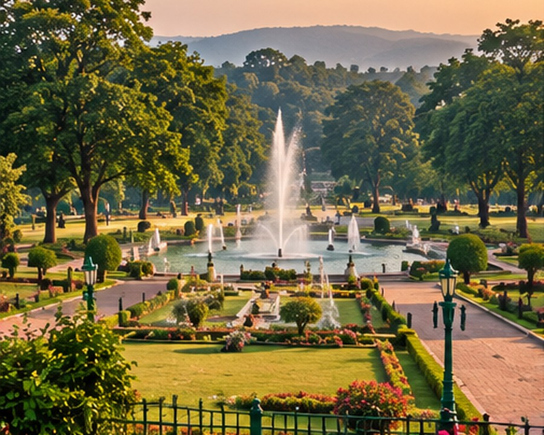
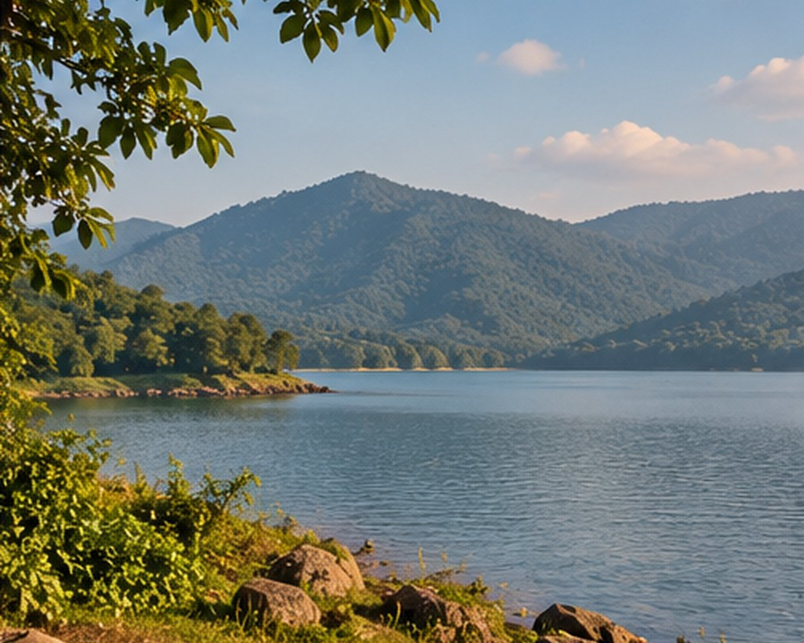
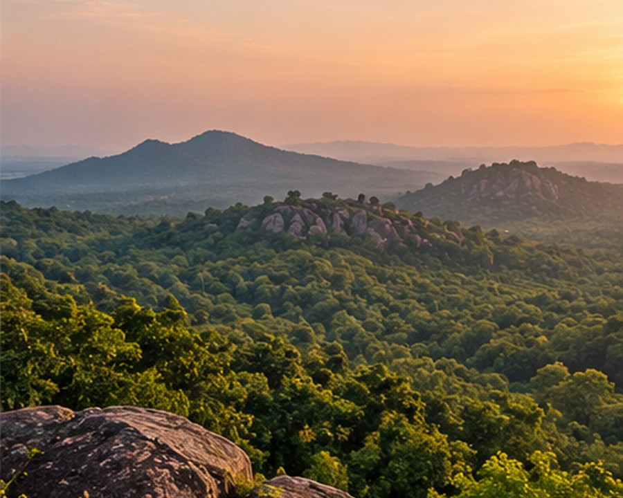
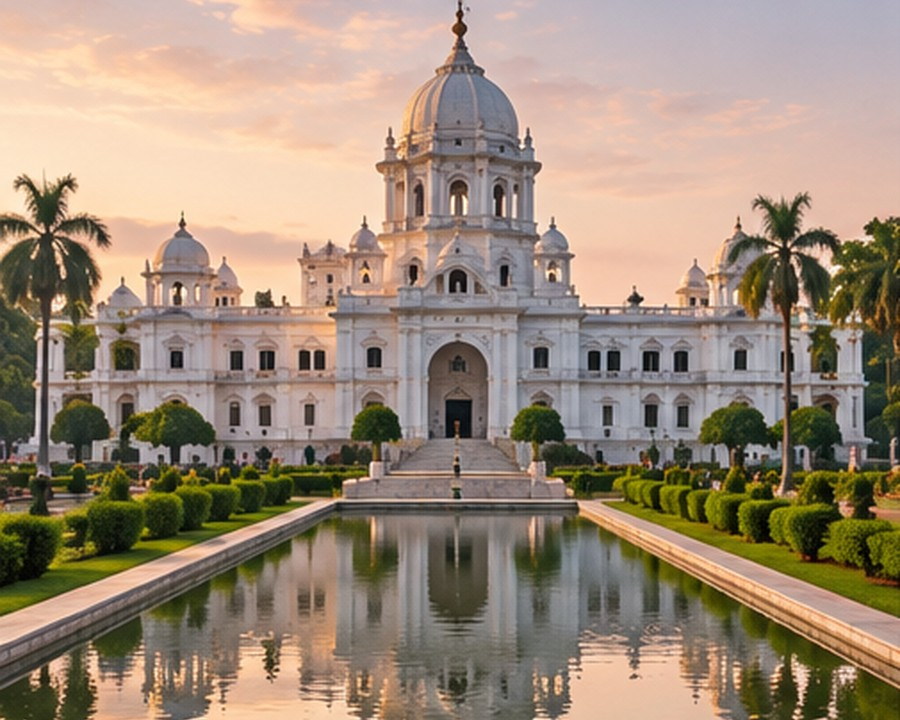
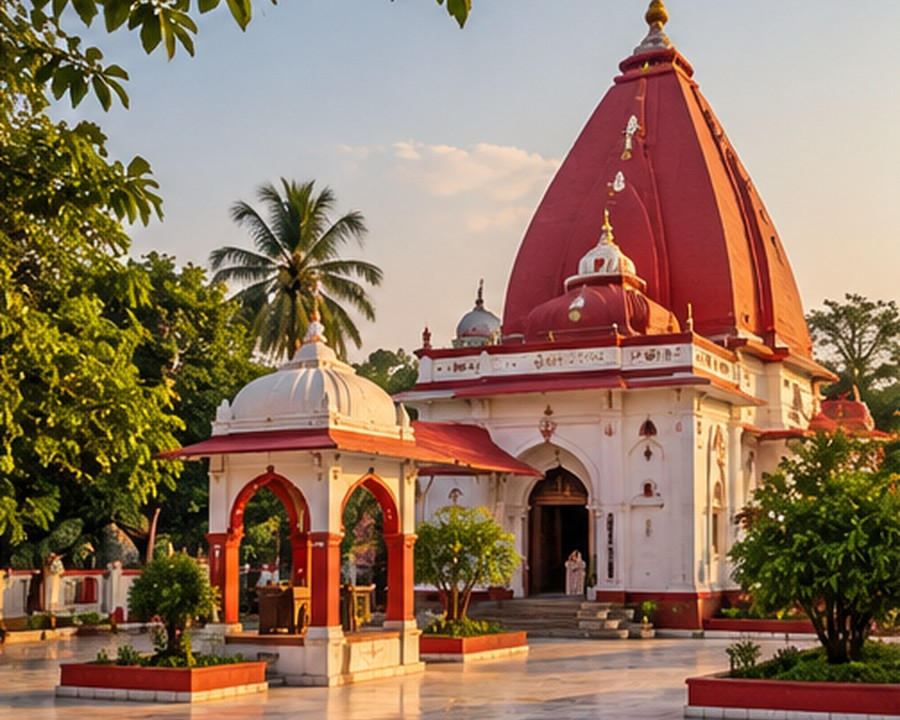
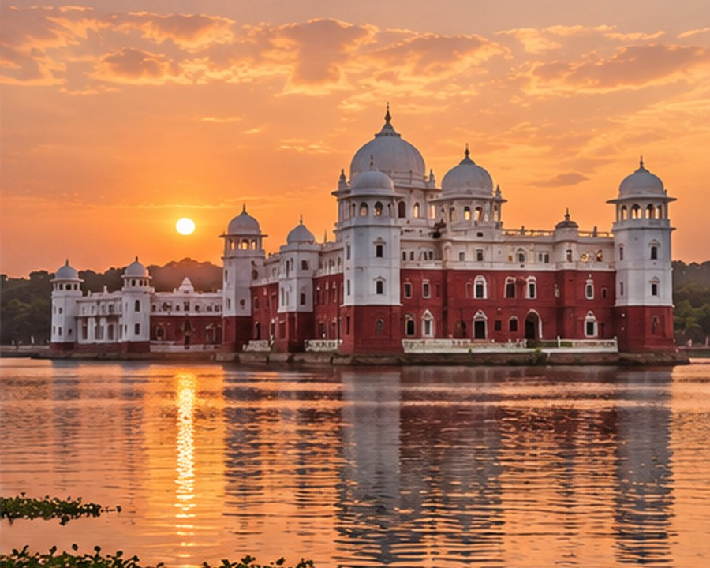

In the city · Easy visit
Jubilee Park
A much-loved green space with landscaped gardens, fountains and wide paths—lovely for a relaxed stroll and a breather between celebrations.
Best for a short, unhurried visit.
Explore on Maps ↗A NOTE FOR OUR TRAVELLING GUESTS
If you have a little time before or after the celebrations, here are a few places worth discovering around Jamshedpur and Tripura.
GARDENS · LAKES · NATURE
From a quiet garden stroll to a scenic drive into the hills, these are easy ways to enjoy a little more of the Steel City.

In the city · Easy visit
A much-loved green space with landscaped gardens, fountains and wide paths—lovely for a relaxed stroll and a breather between celebrations.
Best for a short, unhurried visit.
Explore on Maps ↗
Near the city · Scenic outing
A calm reservoir with the Dalma hills as a backdrop. Go for open views, fresh air and a slower afternoon away from the city bustle.
Around 13–15 km from the city; allow time for the drive.
Explore on Maps ↗
Nature outing · Half/full day
Forested hills, viewpoints and wildlife habitat make this a rewarding option for guests who enjoy nature and the outdoors.
Plan ahead and confirm current entry/access arrangements.
Explore on Maps ↗ROYAL HISTORY · TEMPLES · LAKE PALACES
Stay close to Agartala for a cultural stop, or set aside a day to explore the remarkable places beyond the city.

In Agartala · Cultural stop
A striking former royal palace that houses the Tripura State Museum—an elegant introduction to the region’s history and royal heritage.
A good option if you have a few hours in the city.
Explore on Maps ↗
Day trip · Udaipur
Visit the revered Tripura Sundari Temple in Udaipur, with its distinctive red shrine and nearby Kalyan Sagar. You can pair it with other local heritage stops.
Allow a good part of the day for the round trip.
Explore on Maps ↗
Day trip · Melaghar
Tripura’s celebrated water palace rises from Rudrasagar Lake, with domes and terraces reflected on the water. It is a memorable excursion for architecture and scenery.
Roughly 50–60 km from Agartala, depending on your starting point.
Explore on Maps ↗A small planning note: These are optional sightseeing ideas, not part of the wedding schedule. Images are illustrative; please use the map links to confirm the exact locations. Check current opening hours, transport and access before setting out. Neermahal and Matabari are best planned as separate day trips rather than squeezed between wedding functions.